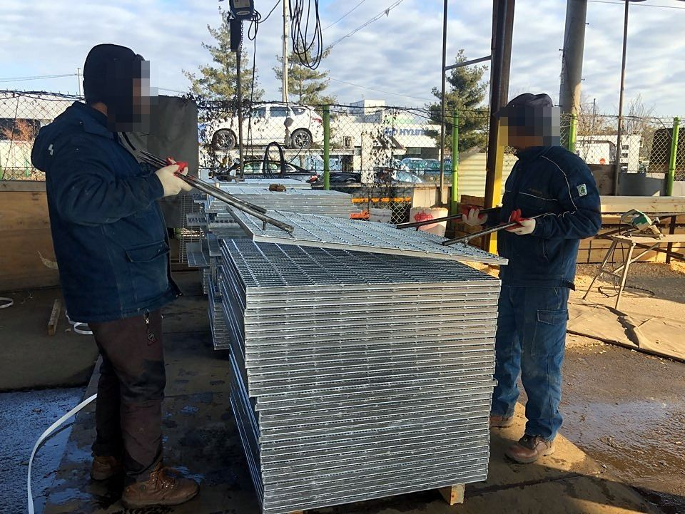

스틸 그레이팅의 구조
스틸 그레이팅은 하중을 받는 베어링 바를 일정한 간격(피치)으로 세우고, 그 위를 크로스 바로 가로질러 전기 저항 압접으로 한 몸으로 만든 격자형 바닥재입니다.
빛과 공기, 빗물이 통과하고 무게에 비해 강도가 높아 플랜트의 통로와 작업대, 배수로 덮개, 계단에 쓰입니다. 패널 양 끝은 엔드 바로 막거나(엔드바형) 열어 둡니다(컷엔드형).
베어링 바 형태
베어링 바의 단면 형태에 따라 네 가지로 나뉘고, 각각 엔드바형과 오픈엔드형으로 만듭니다.
I-Bar형 그레이팅
베어링 바의 단면형이 I형일 때 I-Bar형 그레이팅이라고 합니다.
플렛 바 그레이팅
베어링 바의 단면이 평면일 때 플렛 바 그레이팅이라고 합니다.
톱니 I-Bar형 그레이팅
베어링 바의 단면형이 톱니형과 I형을 접목한 형태일 때 톱니 I-Bar형 그레이팅이라고 합니다.
톱니형 그레이팅
베어링 바의 상부면이 톱니형일 때 톱니형 그레이팅이라고 합니다.
기본 치수
| 베어링 바 형태 | I-Bar, Flat Bar, 톱니 I-Bar(SI), 톱니 Flat Bar(SF) |
|---|---|
| 베어링 바 간격 | 12.5 / 15 / 25 / 30 / 35.3 / 40 mm |
| 크로스 바 간격 | 100 mm |
| 크로스 바 | 피치 30mm: 6×6 사각봉 · 35.3mm: 8×8 사각봉 · 15mm: ø6 환봉 · 12.5mm: ø5 환봉 |
| 최대 표준 폭 | 995 mm (베어링 바 수와 피치로 결정) |
| 길이 | 설계 치수에 맞춰 제작 (길이 = 베어링 바 방향, 폭 = 크로스 바 방향) |
| 끝 마감 | 엔드바형 / 컷엔드(오픈엔드)형 |
| 재질 | 탄소강 압연바 JIS G3101 SS400, SS275 |
| 표면처리 | 용융아연도금 KS D 8308, JIS H8641, ASTM A123 |
| 제작 공차 | NAAMM(미국 건축금속제조협회) 기준 |
베어링 바 규격
I = 단면 2차 모멘트, Z = 단면계수 (베어링 바 1본 기준)
I-Bar
| 형식 | 치수 H×W×T (mm) | I (cm⁴) | Z (cm³) |
|---|---|---|---|
| I-25 | 25×5×3 | 0.605 | 0.484 |
| I-32 | 32×5×3 | 1.251 | 0.782 |
| I-38 | 38×5×3 | 2.083 | 1.096 |
| I-44 | 44×5×3 | 3.221 | 1.464 |
| I-50 | 50×5×3 | 4.609 | 1.844 |
| I-50 (7T) | 50×7×4 | 6.432 | 2.573 |
| I-55 | 55×7×4 | 8.488 | 3.086 |
| I-65 | 65×7×4 | 13.960 | 4.295 |
| I-75 | 75×7×4 | 21.387 | 5.703 |
Flat Bar
| 형식 | 치수 H×T (mm) | I (cm⁴) | Z (cm³) |
|---|---|---|---|
| F-25 | 25×5 | 0.651 | 0.521 |
| F-32 | 32×5 | 1.365 | 0.853 |
| F-38 | 38×5 | 2.286 | 1.203 |
| F-44 | 44×5 | 3.549 | 1.613 |
| F-50 | 50×5 | 5.208 | 2.083 |
| F-50 (6T) | 50×6 | 6.250 | 2.500 |
| F-65 | 65×6 | 13.731 | 4.225 |
| F-75 | 75×6 | 21.094 | 5.625 |
| F-90 | 90×6 | 36.450 | 8.100 |
톱니형
| 형식 | 규격 | 피치 (mm) | 크로스 바 |
|---|---|---|---|
| 톱니 I-Bar | SI-25 ~ SI-44 (×5×3) | 30 / 15 | 6×6 / ø6 |
| 톱니 Flat Bar | SF-25 ~ SF-44 (×5) | 30 | 6×6 |
톱니형의 단위중량은 같은 규격의 I-Bar·Flat Bar와 같습니다.
단위중량
kg/m², 용융아연도금 후 기준
| 베어링 바 | 피치 30mm | 피치 35.3mm | 피치 40mm | |||
|---|---|---|---|---|---|---|
| 엔드바형 | 컷엔드형 | 엔드바형 | 컷엔드형 | 엔드바형 | 컷엔드형 | |
| I-Bar 25×5×3 | 31.4 | 29.5 | 27.4 | 25.4 | 25.1 | 23.1 |
| I-Bar 32×5×3 | 38.6 | 36.1 | 33.8 | 31.3 | 30.9 | 28.4 |
| I-Bar 38×5×3 | 44.2 | 41.3 | 38.6 | 35.6 | 35.2 | 32.2 |
| I-Bar 44×5×3 | 50.5 | 47.1 | 44.0 | 40.5 | 40.1 | 36.6 |
| I-Bar 50×5×3 | 55.4 | 51.5 | 48.3 | 44.4 | 44.0 | 40.1 |
| I-Bar 50×7×4 | – | – | 67.5 | 62.8 | 61.5 | 56.8 |
| I-Bar 55×7×4 | – | – | 73.2 | 68.0 | 66.6 | 61.4 |
| I-Bar 65×7×4 | – | – | 85.2 | 79.1 | 77.4 | 71.3 |
| I-Bar 75×7×4 | – | – | 97.4 | 90.3 | 88.5 | 81.4 |
| F-Bar 25×3 | 23.3 | 22.1 | – | – | – | – |
| F-Bar 32×3 | 29.1 | 27.6 | – | – | – | – |
| F-Bar 38×3 | 34.2 | 32.4 | – | – | – | – |
| F-Bar 25×5 | 38.1 | 36.2 | 33.2 | 31.2 | 30.3 | 28.3 |
| F-Bar 32×5 | 48.1 | 45.6 | 41.8 | 39.3 | 38.1 | 35.6 |
| F-Bar 38×5 | 56.5 | 53.5 | 49.1 | 46.1 | 44.7 | 41.7 |
| F-Bar 44×5 | 65.0 | 61.6 | 56.4 | 53.0 | 51.3 | 47.8 |
| F-Bar 50×5 | 73.6 | 69.7 | – | – | – | – |
'–'는 표준 단위중량 자료가 없는 조합입니다. 표에 없는 규격도 주문 제작합니다.
계단 발판
그레이팅 양 끝에 엔드 플레이트를 붙여 계단 측판에 용접하거나 볼트로 고정합니다.
| 체결 방식 | 용접형 / 볼트형 |
|---|---|
| 폭 (볼트 구멍 간격) | 215 mm (120) · 245 mm (150) · 275 mm (180) |
| 길이 | 500 ~ 1,200 mm |
| 베어링 바 | F25×5, F32×5, I25×5×3, I32×5×3 |
| 엔드 플레이트 | 모든 베어링 바에 3 mm 이상 필렛 용접 |
고정 방법
진동, 탈착 필요 여부, 시공 속도에 따라 고릅니다.
새들 클립
볼트로 고정하며 떼어낼 수 있습니다.
상하 클립
위아래로 물려 진동에 강합니다.
셀프 드릴링 스크류
천공 없이 빠르게 시공합니다.
현장 용접
떼어낼 필요가 없는 구간에 씁니다.
용융아연도금
제작을 마친 그레이팅은 녹은 아연에 담가 표면 전체를 아연층으로 덮습니다. 옥외와 습한 플랜트 환경에서 부식을 막습니다.
KS D 8308, JIS H8641, ASTM A123 기준으로 도금하고, 도금 두께와 표면 상태를 측정한 뒤 출고합니다.
